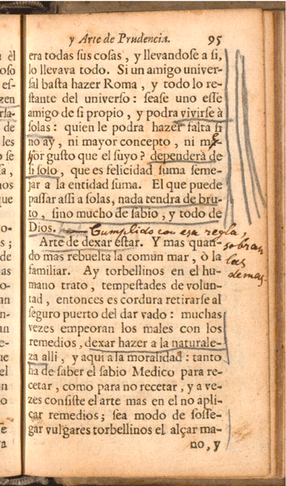

Rękopiśmienne adnotacje Arthura Schopenhauera: ich edycja oraz cyfrowe kodowanie
☰
spis treści
- Interpretacja↡(3)
- Model znakowania↡(2)
- Publikacja cyfrowa↡(1)
- Impressum
Bibliotheka Schopenhauera

Obras

L.M., Morum exemplar, 1654. Detalle del frontispicio
- Reglas de gobernarse: tradición
- "epítome de aciertos del vivir"
- Sabiduría práctica: prudencia
- Conocimiento del yo y de los otros
- Programa formativo: ser persona
- Forma aforística
Selbstbildnis Arthur Schopenhauers in Ueber Grund und Werth... Universitätsbibliothek F/M
Selbstbildnis Arthur Schopenhauers? in Oráculo manual OM, Schopenhauer-Archiv (603/56)
Marginalia

klasyfikacja

Oracolo manuale, Venecia, 1679. Reedicción de la prínceps BSD

Interpretacja

L'homme de cour, Amelot de La Houssaie, (París) La Haya, 1684 BUWr
Proweniencja

L'homme de cour, Amelot de La Houssaie, París, 1684 UT
"Mostrar en un resumen los 300 aforismos, en un estilo muy conciso, sería lo mismo que ponerse a describirlos. Pueden leerse con poco esfuerzo, pero no pueden comprenderse sin un largo y continuado trabajo; aunque el traductor ha procurado explicar los "grifos" según el genio de la agudeza francesa y añadir, mediante notas, pasajes bastante claros tomados de las obras El Héroe y El Discreto del autor en las cuales se pueden encontrar también, con seguridad, opiniones tomadas de otros diligentísimos escritores de política"
Acta eruditorum, febrero, 1685.
paratextos, formatos

L'homme de cour, Amelot de La Houssaie, París, 1684 UT

Oráculo manual y arte de prudencia, Huesca, 1647. Prínceps. Edición facsímil, Egido, Zaragoza, 2001

Oráculo Manval, y Arte de Prudencia, Ámsterdam, Juan Blaeu, 1659. Ejemplar personal de Schopenhauer con marginalia Schopenhauer-Archiv (603/56).
<p>
<add type="Randstreichung" subtype="triple" hand="#Schop1">
<seg type="maxim" xml:id="137">
<num type="ordinal">137</num>. Bástese a sí mismo el sabio.</seg> Él se<lb
type="hyphenInWord" break="no"/>
<pb n="95"/>era todas sus cosas, y llevándose a sí<lb/> lo llevaba todo. Si un amigo
univer<lb type="hyphenInWord" break="no"/>sal basta hacer Roma, y todo lo re<lb
type="hyphenInWord" break="no"/>stante del universo, séase uno ese<lb/> amigo de sí
propio, y podrá <add hand="#Schop1" type="Unterstreichung">vivirse a<lb/> solas.</add>
¿Quién le podrá hacer falta si<lb/> no hay ni mayor concepto, ni m<subst hand="#Schop2"
><del>a<lb type="hyphenInWord" break="no"/>y</del><add>ej</add></subst>or <note
resp="editor">¿Quizá porque el gusto se debe medir en categorías de bueno y malo?
Schopenhauer conservó "mayor"en la traducción</note> gusto que el suyo? <add
type="Unterstreichung">Dependerá de<lb/> sí solo</add>, que es felicidad suma seme<lb
type="hyphenInWord" break="no"/>jar a la entidad suma. El que puede<lb/> pasar así a
solas, <add hand="#Schop1" type="Unterstreichung">nada tendrá de bru<lb/>to, sino mucho de
sabio y todo de <lb/>Dios. </add>
<add type="gloss" hand="#Schop2" xml:lang="es" place="inline">Cumplido con esa regla, sobran
las demas</add>
</add> </p>Model zaznakowania

“The Role of Markup in the Digital Humanities”, Desmond Schmidt, Queensland University of Technology, 2012

“The Role of Markup in the Digital Humanities”, Desmond Schmidt, Queensland University of Technology, 2012

C. Schöch Digitale Textedition mit TEI (Tutorial)
- short definition:
- X
- X
- X
- X
- X
-
Focusing on the transcript of handwritten marginalia
- całościowa czy częściowa transkrypcja nośnika
“The essential and defining character of the marginal note throughout its history is that it is a responsive kind of writing permanently anchored to preexisting written words.”
Jackson, H. J., Marginalia: Readers writing in Books , New Haven: Yale University Press, 2001, p. 81
specifications for highlighting and quotation; for additions, deletions, and omissions; for substitutions; for writing, decoration; for spans and interpretations. Some of the elements and attributes that may be used for the transcription of marginalia:
<add>
<gloss>
;note>
<handNotes>
@type
@place
@hand
Drupal

Balthazar Gracian’s Hand-Orakel und Kunst der Weltklugheit, ... aus dem Spanischen Original treu und sorgfältig übersetzt. [von Arthur Schopenhauer. 11 Bogen]. Schopenhauer-Archiv (4/14). Original en Staatsbibliothek Stiftung Preußischer Kulturbesitz
<p><seg type="maxim" xml:id="138">
<num>138</num>. <add hand="#Schop1" type="Unterstreichung">Arte de dexar estar</add>.</seg> Y más quan<lb type="hyphenInWord" break="no"/>do mas rebuelta la comun mar, ò la<lb/> familiar. Ay torbellinos en el hu<lb type="hyphenInWord" break="no"/>mano trato, tempestades de volun<lb type="hyphenInWord" break="no"/>tad, entonces es cordura retirarse al<lb/> <add type="Randstreichung" subtype="simple">seguro puerto del dar vado: muchas<lb/> vezes empeoran los males con los<lb/> remedios, <add type="Unterstreichung">dexar hazer a la naturale<lb type="hyphenInWord" break="no"/>za allí</add>, y aqui a la moralidad: tanto<lb/></add> ha de saber sabio Medico para re<lb type="hyphenInWord" break="no"/>cetar, como para no recetar, y a veces<lb/> consiste el arte mas en el no apli<lb type="hyphenInWord" break="no"/><add type="Unterstreichung">car remedios; sea modo de sosse<lb type="hyphenInWord" break="no"/>gar vulgares torbellinos el alçar ma<lb type="hyphenInWord" break="no"/></add>
<pb n="96"/>no, y dexar sossegar, ceder al tiem<lb type="hyphenInWord" break="no"/>po aora, para vencer despues ; una<lb/> fuente con poca inquietud se entur<lb type="hyphenInWord" break="no"/>bia, ni fe volverá a serenar procu<lb type="hyphenInWord" break="no"/>randolo, sino dexandola: no ay<lb/> mejor remedio de los desconciertos<lb/> que dexarlos correr , que assi caen<lb/> de ú propios.<lb/>
</p>
El episodio del Charlatán
"quiero citar un pasaje de mi autor español favorito que, dado que es muy divertido y ofrece una muestra de un libro excelente, tan bueno como desconocido en Alemania, le será, en cualquier caso, bienvenido al lector. Pero este pasaje ha de servir de espejo, de manera especial, a muchos jóvenes y viejos pisahierbas alemanes que, en la callada pero profunda conciencia de su incapacidad intelectual, cantan a los pícaros el elogio de Hegel y afectan encontrar una sabiduría maravillosamente profunda en las expresiones hueras o totalmente sin sentido de ese charlatán filosófico." [...] "la rapsodia española que quiero citar aquí como conclusión festiva de este prólogo es tan asombrosamente de actualidad que pudiera surgir la sospecha de que estuviera redactada en 1840 y no en 1640: por ello, sirva de información que la traduzco fielmente del Criticón de Baltasar Gracián, P. III, Crisi 4, p. 285 del primer volumen de la primera edición de Amberes de las Obras de Lorenzo Gracián de 1702"
Schopenhauer, Los dos problemas fundamentales de la ética, Madrid: Siglo XXI, 1993, p. 23; p. 26
Schopenhauer und Das Handorakel
- Visión escéptico pesimista del hombre y el mundo
- Filosofía práctica
- Aforismos sobre la sabiduría de la vida
- Ética del como-si (Als-ob-Ethik)
- "Tomo aquí el concepto de sabiduría de la vida en sentido totalmente inmanente, a saber: en el arte de llevar una vida tan agradable y feliz como sea posible" [...] "se basa en cierta medida en una acomodación" Schopenhauer, Aforismos sobre la sabiduría de la vida, Trotta, p. 331
Schopenhauer en busca de editor
Control del proceso editorial
Revisión crítica de otras traducciones
<p><seg type="maxim" xml:id="138">
<num>138</num>. <add hand="#Schop1" type="Unterstreichung">Arte de dexar estar</add>.</seg> Y más quan<lb type="hyphenInWord" break="no"/>do mas rebuelta la comun mar, ò la<lb/> familiar. Ay torbellinos en el hu<lb type="hyphenInWord" break="no"/>mano trato, tempestades de volun<lb type="hyphenInWord" break="no"/>tad, entonces es cordura retirarse al<lb/> <add type="Randstreichung" subtype="simple">seguro puerto del dar vado: muchas<lb/> vezes empeoran los males con los<lb/> remedios, <add type="Unterstreichung">dexar hazer a la naturale<lb type="hyphenInWord" break="no"/>za allí</add>, y aqui a la moralidad: tanto<lb/></add> ha de saber sabio Medico para re<lb type="hyphenInWord" break="no"/>cetar, como para no recetar, y a veces<lb/> consiste el arte mas en el no apli<lb type="hyphenInWord" break="no"/><add type="Unterstreichung">car remedios; sea modo de sosse<lb type="hyphenInWord" break="no"/>gar vulgares torbellinos el alçar ma<lb type="hyphenInWord" break="no"/></add>
<pb n="96"/>no, y dexar sossegar, ceder al tiem<lb type="hyphenInWord" break="no"/>po aora, para vencer despues ; una<lb/> fuente con poca inquietud se entur<lb type="hyphenInWord" break="no"/>bia, ni fe volverá a serenar procu<lb type="hyphenInWord" break="no"/>randolo, sino dexandola: no ay<lb/> mejor remedio de los desconciertos<lb/> que dexarlos correr , que assi caen<lb/> de ú propios.<lb/>
</p>
Dificultad de la traducción
"He mantenido no sólo el sentido exacto, sino también el tono y el estilo del original, que después de mucho pulir y mejorar, he redondeado y hecho tan fluido que cualquier persona atenta, incluso las mujeres, lo entenderán perfectamente; estoy convencido de ello. Es más difícil de lo que parece, y el resultado es, a su manera, una pequeña obra de arte" Schopenhauer a Brockhaus, carta: 15.5.1829
- juegos de palabras, paradojas
- laconismo extremo "Escribo breve por tu mucho entender; corto, por mi poco pensar", Al lector, El Héroe
- oscuridad premeditada "no se escribe para todos, y por eso es de modo que la arcanidad del estilo aumente veneración a la sublimidad de la materia, haciendo más veneradas las cosas el misterioso modo de decirlas", A los lectores, Discreto
- citas y referencias encubiertas